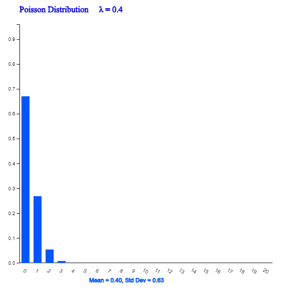

Consider the following examples that are frequently observed in many areas around us.
- The number of calls made to an office of the Economics Department between 9 am and 10 am daily for one month.
- The number of traffic accidents occurring at a certain intersection every day is investigated for one year.
- The number of defective spots per each one square meter of the fabric is investigated for 100 square meters.
- The number of typing errors that occur on each page of a book.
- The number of accidents occurring during a week in a factory for one year
What these statistical experiments have in common is to investigate the number of events per unit time or unit area. A random variable that represents this 'occurrence of events per unit time or unit area' is called a Poisson random variable and its distribution is called a Poisson distribution.
Probability of the Poisson distribution can be calculated using the following formula.
Poisson Distribution
The distribution of a Poisson random variable \(X\) = 'Occurrence of success event per unit time or unit area'
is as follows when the average number of success is λ.
$$
f(x) = \frac { e^{-\lambda} \lambda^x } { x! } , \qquad x = 0, 1, 2, ...
$$
The expectation and variance of the Poisson random variable are as follows.
$$
E(X) = \lambda, \quad V(X) = \lambda
$$
The average number of success λ in the Poisson distribution function is called a parameter of the Poisson distribution.
Note that the mean and variance of the Poisson distribution are the same as &lambda.
<Figure 5.3.8> to <Figure 5.3.11> show the Poisson distributions for different values of λ by using 『eStatU』.

<Figure 5.3.8> Poisson Distribution when λ = 0.4
<Figure 5.3.9> Poisson Distribution when λ = 1.0
<Figure 5.3.10> Poisson Distribution when λ = 1.5
<Figure 5.3.11> Poisson Distribution when λ = 2.0
Example 5.3.8
Assume that cars arriving at a highway toll gate per one minute during rush hour is the Poisson distribution with an average of five cars. One day, if you observe the toll gate for one minute during rush hour, calculate the following probabilities.
1) What is the probability that none of cars will arrive?
2) What is the probability of five cars arriving?
3) What is the probability of more than two cars arriving?
Answer
Let \(\small X\) be the Poisson random variable with λ = 5.
Example 5.3.9
Assume that the average number of Typhoons passing through the southern part of the country per year is a Poisson distribution with λ = 2.5.
Check the following probabilities using 『eStatU』.
1) What is the probability that a Typhoon will pass once this year?
2) What is the probability that Typhoons will pass twice or three times or four times this year?
3) What is the probability that Typhoons will pass more than once this year?
Answer
Select [Poisson distribution] from the menu of 『eStatU』 and select λ = 2.5. Then click on the [Execute] button to display a graph such as <Figure 5.3.12> and click the [Poisson Prob Table] button to see the Table 5.3.7.
Practice 5.3.3
The number of defects per 1 square meter of the fabric follows a Poisson distribution with the average number of defects λ = 0.2.
When 1 square meter of the fabric is investigated for quality inspection, find the following probabilities using 『eStatU』.
1) What is the probability that the number of defects is zero?
2) What is the probability that the number of defects is greater than 2?
Binomial distribution and Poisson distribution are very closely related. Mathematically, if \(n\) is very large and \(p\) is very small,
the binomial distribution function converges to the Poisson distribution function. If you are interested in proofing this theory in detail,
please refer to a book of mathematical statistics.